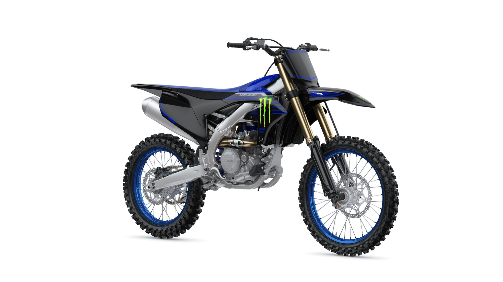
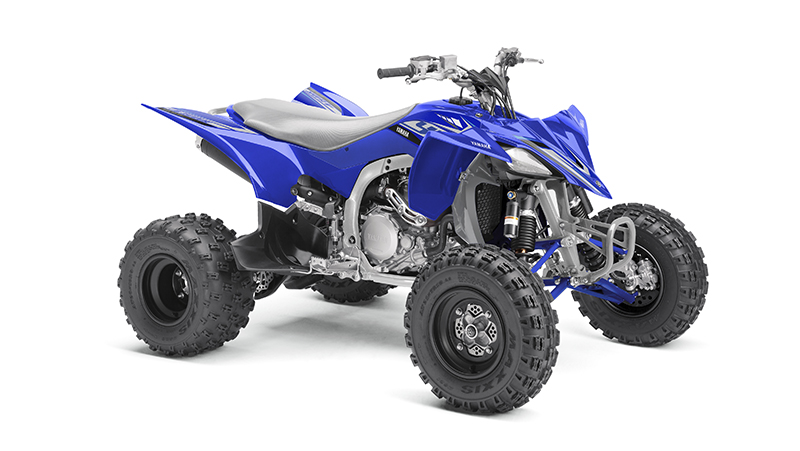
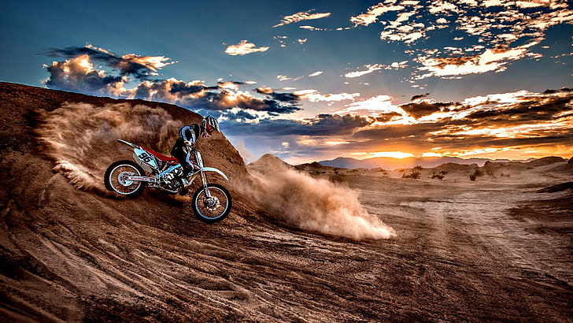

Off Road Machines
Sin asfalto, el barro y el polvo serán tus aliadosMejores vehículos para el off road
YZ450F
Es la moto de motocross de 450 cc más ligera, esbelta, ágil y rápida de la historia de Yamaha. Su potencial ganador en MXGP y SX demuestra lo buena que es. Y sea cual sea el nivel en el que compitas, la YZ450F tiene el motor, el parte ciclo y la electrónica que te permiten para rendir al máximo.
YFZ450R

El embrague asistido y antirrebote, de inspiración deportiva, proporciona el máximo control en la entrada en curvas y permite rebajar los tiempos por vuelta, mientras que el motor, basado en nuestra experiencia en competición, proporciona una respuesta instantánea del acelerador en altas RPM con el rendimiento perfecto para llegar a lo más alto del podio.
El afilado diseño de la carrocería da amplitud al piloto para desplazar el peso según las necesidades, ya sea al tomar una curva o acelerar al máximo. Y los ligeros amortiguadores con depósito de precarga garantizan una conducción increíblemente precisa.
Próximos eventos de competicón Moto Cross
MX PRO TOUR 2023
